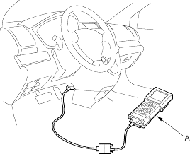
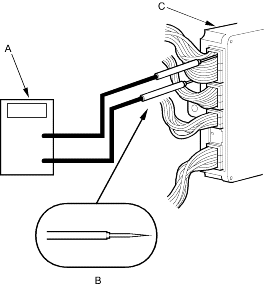
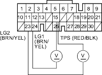

- Warm up the engine to normal operating temperature (the radiator fan comes on).
- Apply the parking brake and block rear wheels. Start the engine, then shift to
 position while pressing the brake pedal. Press the accelerator pedal and release it suddenly. The engine should not stall.
position while pressing the brake pedal. Press the accelerator pedal and release it suddenly. The engine should not stall. - Repeat the same test in
 position.
position. - Connect the Honda PGM Tester (A) and go to the PGM-FI Data List; then go to step 9. If you do not have a PGM Tester, go to step 5.

- Remove the PCM and lower it, refer to the '01 Civic Shop Manual on this CD (see page 14-6).
- Connect a digital multitester (A) and tapered tip probe (B) to check voltage between the A15 (+) terminal and A23 (-) or A24 (-) terminal of the PCM (C).

PCM CONNECTOR A (31P)

Wire side of female terminals